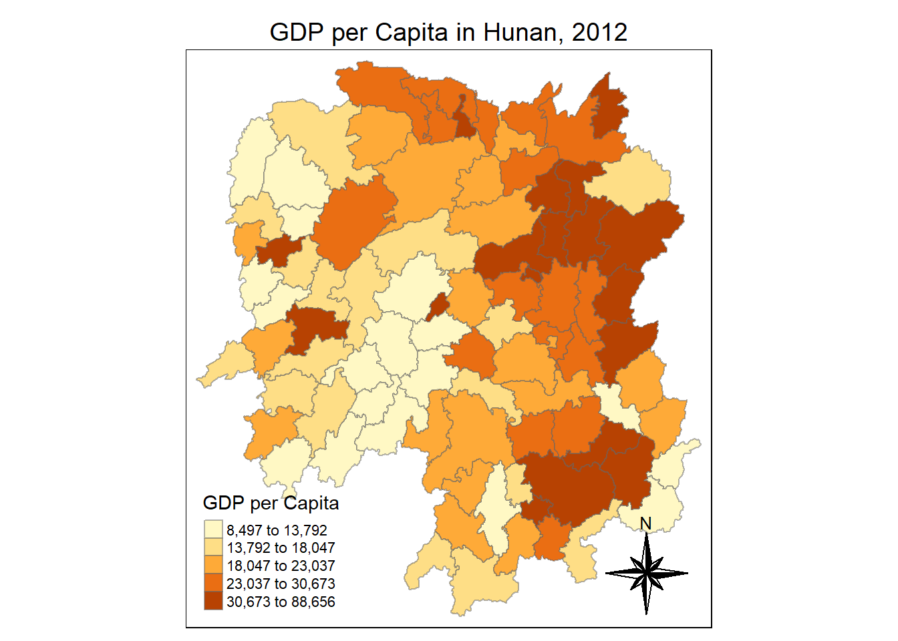

pacman::p_load(sf, sfdep, tmap, tidyverse)In Class Exercise 5
Installing and loading packages
The Data
For the purpose of this exercise, the Hunan data sets will be used. There are two data sets in this use case, they are:
Hunan, a geospatial data set in ESRI shapefile format and
Hunan
hunan <- st_read(dsn = "data/geospatial", layer = "Hunan")Reading layer `Hunan' from data source
`C:\AloysiusCedric\IS415-GAA\In-class_Ex\In-class_Ex05\data\geospatial'
using driver `ESRI Shapefile'
Simple feature collection with 88 features and 7 fields
Geometry type: POLYGON
Dimension: XY
Bounding box: xmin: 108.7831 ymin: 24.6342 xmax: 114.2544 ymax: 30.12812
Geodetic CRS: WGS 84hunan2012 <- read_csv("data/aspatial/Hunan_2012.csv")Rows: 88 Columns: 29
── Column specification ────────────────────────────────────────────────────────
Delimiter: ","
chr (2): County, City
dbl (27): avg_wage, deposite, FAI, Gov_Rev, Gov_Exp, GDP, GDPPC, GIO, Loan, ...
ℹ Use `spec()` to retrieve the full column specification for this data.
ℹ Specify the column types or set `show_col_types = FALSE` to quiet this message.Converting Hunan into a CRS 3414
hunan <- st_transform(hunan, crs = 3414)
hunanSimple feature collection with 88 features and 7 fields
Geometry type: POLYGON
Dimension: XY
Bounding box: xmin: 519287.2 ymin: 2635051 xmax: 1070836 ymax: 3242818
Projected CRS: SVY21 / Singapore TM
First 10 features:
NAME_2 ID_3 NAME_3 ENGTYPE_3 Shape_Leng Shape_Area County
1 Changde 21098 Anxiang County 1.869074 0.10056190 Anxiang
2 Changde 21100 Hanshou County 2.360691 0.19978745 Hanshou
3 Changde 21101 Jinshi County City 1.425620 0.05302413 Jinshi
4 Changde 21102 Li County 3.474325 0.18908121 Li
5 Changde 21103 Linli County 2.289506 0.11450357 Linli
6 Changde 21104 Shimen County 4.171918 0.37194707 Shimen
7 Changsha 21109 Liuyang County City 4.060579 0.46016789 Liuyang
8 Changsha 21110 Ningxiang County 3.323754 0.26614198 Ningxiang
9 Changsha 21111 Wangcheng County 2.292093 0.13049161 Wangcheng
10 Chenzhou 21112 Anren County 2.240739 0.13343936 Anren
geometry
1 POLYGON ((825339.4 3209148,...
2 POLYGON ((846673.4 3139165,...
3 POLYGON ((810038.7 3190827,...
4 POLYGON ((756935.9 3225838,...
5 POLYGON ((783475.6 3207079,...
6 POLYGON ((708206.5 3241744,...
7 POLYGON ((1024633 3091569, ...
8 POLYGON ((900741.8 3060845,...
9 POLYGON ((906766.3 3077439,...
10 POLYGON ((959144.5 2890585,...Joining the two data sets
hunan_GDPPC <- left_join(hunan,hunan2012) %>%
dplyr::select(1:4, 7, 15)Joining with `by = join_by(County)`Mapping the data
tm_shape(hunan_GDPPC) +
tm_fill("GDPPC", style = "quantile", title = "GDP per Capita") +
tm_layout(main.title = "GDP per Capita in Hunan, 2012",
main.title.position = "center",
main.title.size = 1.2,
legend.height = 0.45,
legend.width =0.35,
frame =TRUE) +
tm_borders(alpha = 0.5) +
tm_compass(type = "8star")
Step 1: Deriving contiguity weights: Queen’s method
wm_q = hunan_GDPPC %>%
mutate(nb = st_contiguity(geometry),
wt = st_weights(nb, style = "W"),
.before = 1)Computing Global Moran’I
moranI = global_moran (wm_q$GDPPC,
wm_q$nb,
wm_q$wt)
glimpse(moranI)List of 2
$ I: num 0.301
$ K: num 7.64# Running this for 100 times
global_moran_perm(wm_q$GDPPC,
wm_q$nb,
wm_q$wt,
nsim = 99,
)
Monte-Carlo simulation of Moran I
data: x
weights: listw
number of simulations + 1: 100
statistic = 0.30075, observed rank = 100, p-value < 2.2e-16
alternative hypothesis: two.sided